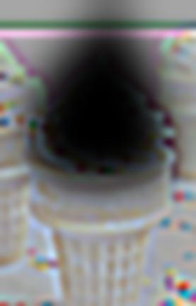

I calculated the partial derivative in x and y of the cameraman image by convolving the original image with the finite difference operators D_x = np.array([[1, -1]]) and D_y = np.array([[1], [-1]]). The gradient magnitude image is derived from the partial derivatives, using the formula, sqrt(gradient_x_image ** 2 + gradient_y_image ** 2). The edge image was produced by binarizing the gradient magnitude image. I used a threshold of 0.3 to produce my results.
| Original Image | Gradient X Image | Gradient Y Image | Gradient Magnitude Image | Edge Image |
|
|
|
To produced the first row of images, I blurred the original image by convolving it with a gaussian. Then, I convolved the blurred image with the finite difference operators D_x and D_y.
To produce the second row of images, I convolved a gaussian with the finite difference operators D_x and D_y to produce the DoG filter. Then I convolved the original image with the DoG X and Y filters.
I developed the gradient magnitude image and edge image using the same techniques from earlier.
These images have much wider lines than the one above, and are much smoother with less noise. This is due to the Gaussian's blurring effect on the original image.
Compared with each other, the rows of each image are practically identical. There are only minor differences on the edges of each image due to the way convolutions on the boundaries are calculated. This is because a convolution is associative and commutative. The only difference in each row is what order I computed the convolutions.
| Gradient X Image Blurred | Gradient Y Image Blurred | Gradient Magnitude Image Blurred | Edge Image Blurred |
| Gradient X Image DoG | Gradient Y Image DoG | Gradient Magnitude Image DoG | Edge Image DoG |
 |
To sharpen an image, I added a high pass filter of the image to the original image to emphasize the image's details. To compute the high pass filter of the image, I needed to first create the unsharp mask filter. The unsharp mask filter is computed by convolving the original image with a gaussian to blur it, so it only contains the low frequencies. Then, I subtract the unsharp mask filter from the original image to get the high pass filter of the image, which contains only the high images.
| Original Image | Alpha: 0.5 | Alpha: 1.0 |
 |
||
| Alpha: 2.0 | Alpha: 4.0 | Alpha: 8.0 |
| Original Image | Alpha: 0.5 | Alpha: 1.0 |
| Alpha: 2.0 | Alpha: 4.0 | Alpha: 8.0 |
I blurred and then sharpened the cactus image to evaluate the effectiveness. The sharpened image brings back some of the contrasts between the cactus flowers and rest of the cactus. However, the blurred image lost a lot of the details in the original, particularly the cactus spines. This information was lost and the sharpened image could not recover it.
| Original Image | Blurred Image | Blurred then Sharpened Image |
Hybrid images are produced by taking a low pass filter of one image, and a high pass filter of another image, and then combining the two images by adding them on top of each other. Low frequencies are seen more prominently at a distance, so the viewer would see the low pass image from far away. But as they approach, the high frequencies become much more visible, and high pass image becomes more conspicuous.
Low pass filters can be developed by convolving the image with a gaussian. High pass filters are developed by subtracting the low pass filter from the original image.
I produced RGB hybrid images by convolving the image with the gaussian across each RGB channel.
| Original Derek Image | Original Nutmeg Image | Low Pass Derek Image | High Pass Nutmeg Image | Hybrid Derek Nutmeg Image |
 |
||||
| Original Derek Image FFT | Original Nutmeg Image FFT | Low Pass Derek Image FFT | High Pass Nutmeg Image FFT | Hybrid Derek Nutmeg Image FFT |
 |
| Original Derek Image | Original Nutmeg Image | Low Pass Derek Image | High Pass Nutmeg Image | Hybrid Derek Nutmeg Image |
 |
||||
| Original Derek Image FFT | Original Nutmeg Image FFT | Low Pass Derek Image FFT | High Pass Nutmeg Image FFT | Hybrid Derek Nutmeg Image FFT |
 |
| Original Bear Grylls Image | Original Grizzly Bear Image | Low Pass Bear Grylls Image | High Pass Grizzly Bear Image | Hybrid Grylls Grizzly Image |
| Original Bear Grylls Image FFT | Original Grizzly Bear Image FFT | Low Pass Bear Grylls Image FFT | High Pass Grizzly Bear Image FFT | Hybrid Grylls Grizzly Image FFT |
 |
I attempted to create a hybrid image where the stealth bomber was visible up close, but disappeared into the open ocean from far away, in true camouflage fashion. Unfortunately, the low pass open ocean image is not noticable enough, even at a distance, to make the stealth bomber go away. This stealth bomber is not very stealthy!
| Original Open Ocean Image | Original Stealth Bomber Image | Low Pass Open Ocean Image | High Pass Stealth Bomber Image | Hybrid Stealthy Ocean Bomber Image |
 |
||||
| Original Open Ocean Image FFT | Original Stealth Bomber Image FFT | Low Pass Open Ocean Image FFT | High Pass Stealth Bomber Image FFT | Hybrid Stealthy Ocean Bomber Image FFT |
 |
 |
Gaussian stacks are developed by repeatedly applying a Gaussian filter to each level, starting at the original image. Laplacian stacks are developed by subtracting the i+1th level of the Gaussian stack from the ith level. The final image in the Laplacian stack is a copy of the final image in the Gaussian stack.
| Level 1 | Level 2 | Level 3 | Level 4 | Level 5 | |
|---|---|---|---|---|---|
| Apple Gaussian |  |
 |
|||
| Apple Laplacian |  |
||||
| Orange Gaussian |  |
||||
| Orange Laplacian |  |
The spline from which the two images are blurred is created through a mask. All values outside the mask are 0, while all values inside the mask are one. When multiplied with an image, only the parts of the image inside the mask remain. I created a Gaussian stack of my mask, and Laplacian stacks of each image. The stacks were multiplied at each level. To develop the blended image, I added up all of the image masks together and then normalized the final image. Blending the image at different frequencies led to a smooth transition between the images.
| Level 1 | Level 2 | Level 3 | Level 4 | Level 5 | |
|---|---|---|---|---|---|
| Apple Masks | |||||
| Orange Masks | |||||
| Oraples |
| Level 1 | Level 2 | Level 3 | Level 4 | Level 5 | |
|---|---|---|---|---|---|
| Turd Masks | |||||
| Ice Cream Masks |  | ||||
| Iced Turds |
| Level 1 | Level 2 | Level 3 | Level 4 | Level 5 | |
|---|---|---|---|---|---|
| Tank Masks |  |
||||
| Camera Masks | |||||
| Camera Tanks |  |